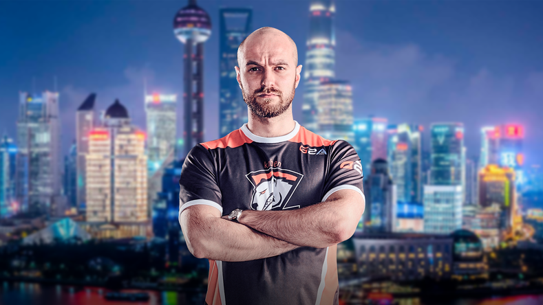

Jakub "kuben" Gurczyński
To polski profesjonalny trener Counter-Strike: Global Offensive i były zawodowy gracz Counter-Strike: Global Offensive i Counter-Strike. Najbardziej znany ze swojego czasu w składzie Złotej Piątki, w lutym 2015 roku ogłoszono, że wyjdzie z emerytury, aby pracować jako trener dla swoich byłych kolegów z drużyny w Virtus.pro. Następnie trenował swoich byłych kolegów z drużyny na Virtus.pro przez ich różne iteracje, wygrywając liczne turnieje w ciągu swojej prawie pięcioletniej kadencji w organizacji.